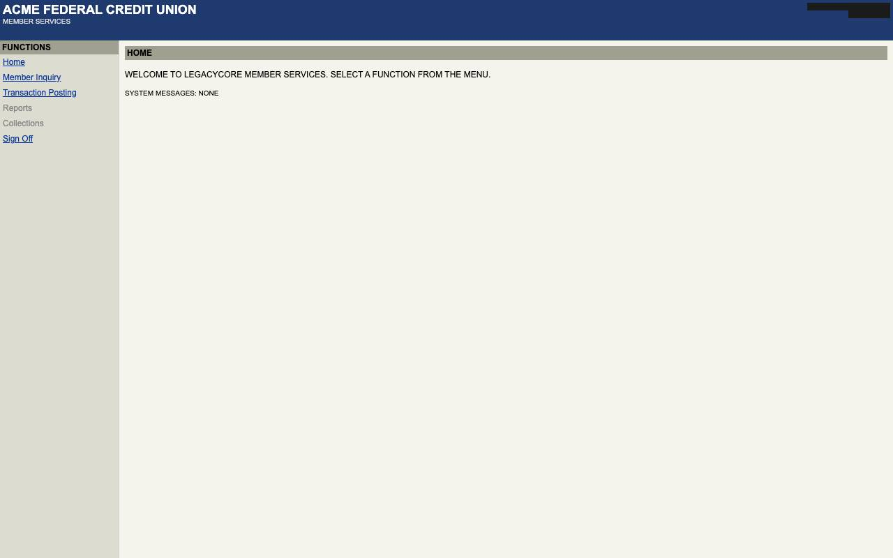
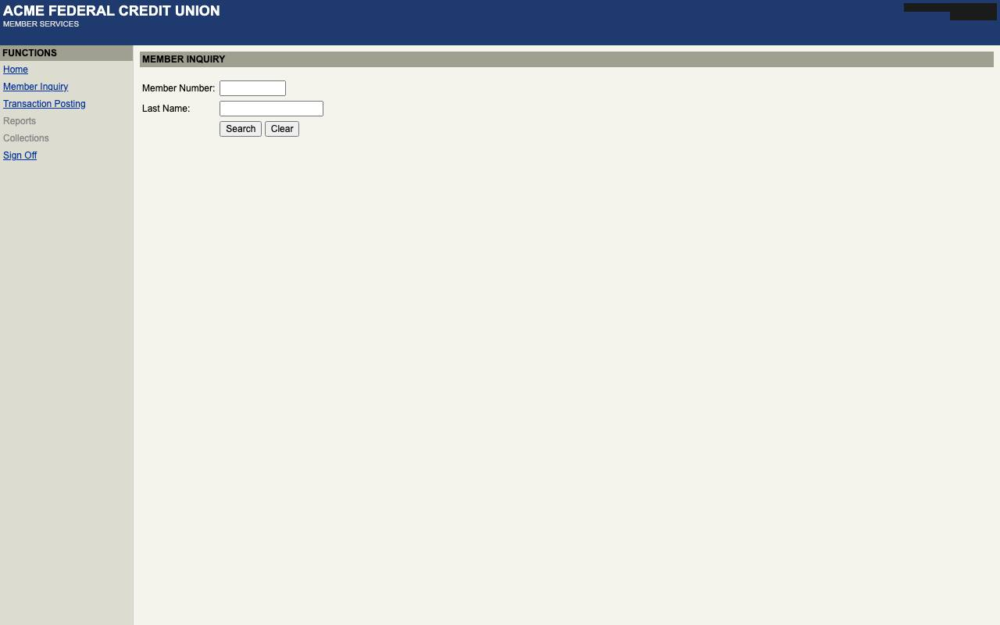
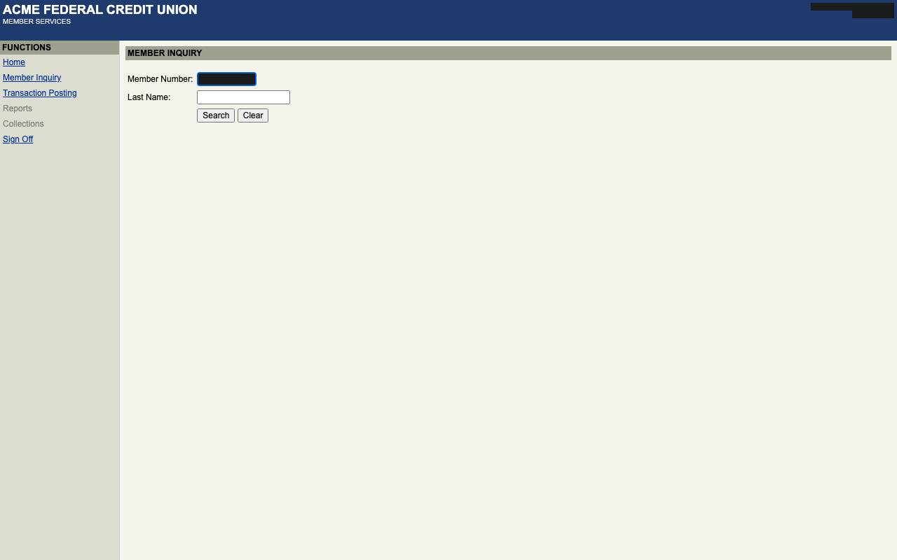
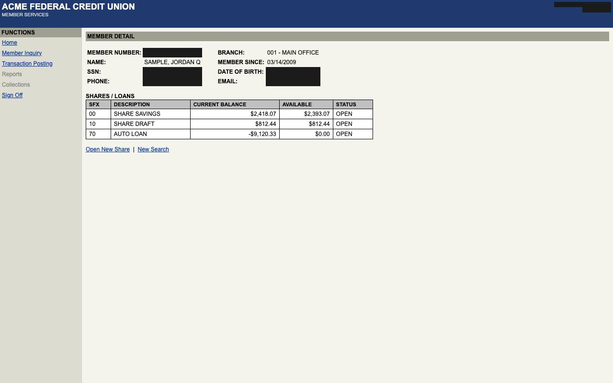

Look up member {{inputs.member_id}} and read their current share savings balance and the member's name
- capability
legacycore.member.get_savings_balance@1.0.0- model
- scripted
- turns
- 8
- actions
- 4
- estimated_cost_usd
- 0.0
Timeline
| 0.3s | console.started | url: http://127.0.0.1:8765 |
| 0.3s | run.started | kind: discovery · run_id: 20261001T043137Z-discovery-legacycore-member-get-savings-balance-a71e · subject: Look up member {{inputs.member_id}} and read their current share savings balance and the member's name · model: scripted · tenant: acme · evidence_dir: runs/20261001T043137Z-discovery-legacycore-member-get-savings-balance-a71e · inputs: ["member_id"] |
| 0.3s | session.establishing | capability: legacycore.session.sign_on@1.0.0 |
| 0.3s | step.started | step: s01_open_signon_asp · intent: Open signon.asp |
| 0.3s | policy.decision | verdict: allow · risk: read_only · reason: navigate does not change application state |
| 0.3s | step.completed | step: s01_open_signon_asp · duration_ms: 62 · locator: None |
| 0.3s | step.started | step: s02_fill_user_id_textbox · intent: Enter {{secrets.username}} in 'User ID' textbox |
| 0.3s | policy.decision | verdict: allow · risk: reversible · reason: edits unsaved form state |
| 0.4s | step.completed | step: s02_fill_user_id_textbox · duration_ms: 72 · locator: attribute |
| 0.4s | step.started | step: s03_fill_password_textbox · intent: Enter {{secrets.password}} in 'Password' textbox |
| 0.4s | policy.decision | verdict: allow · risk: reversible · reason: edits unsaved form state |
| 0.5s | step.completed | step: s03_fill_password_textbox · duration_ms: 81 · locator: attribute |
| 0.5s | step.started | step: s04_click_button_sign_on · intent: Click button 'Sign On' |
| 0.5s | policy.decision | verdict: allow · risk: reversible · reason: navigates or submits without a commit keyword |
| 0.6s | step.completed | step: s04_click_button_sign_on · duration_ms: 102 · locator: attribute |
| 0.6s | checkpoint.verified | capability: legacycore.session.sign_on@1.0.0 · description: 'FUNCTIONS' is shown |
| 2.4s | evidence.captured | turn-00  |
| 2.4s | agent.action | tool: define_capability · summary: id=legacycore.member.get_savings_balance, title=Get a member's savings balance, description=Looks up a member by member number and reads the current balance of their share savings account and the member's name., inputs=[{'name': 'member_id', 'type': 'string', 'description': 'Member number', 'sensiti · rationale: scripted |
| 2.4s | agent.action_result | ok: True · message: capability legacycore.member.get_savings_balance declared with inputs ['member_id'] and outputs ['savings_balance', 'member_name'] |
| 2.4s | agent.action | tool: click · summary: ref=e5, target=link 'Member Inquiry' · rationale: scripted |
| 2.4s | policy.decision | verdict: allow · risk: reversible · reason: navigates or submits without a commit keyword |
| 2.5s | agent.action_result | ok: True · message: clicked link 'Member Inquiry' |
| 4.2s | evidence.captured | turn-02  |
| 4.2s | agent.action | tool: fill · summary: ref=e12, input=member_id, target=textbox (label 'Member Number') · rationale: scripted |
| 4.2s | policy.decision | verdict: allow · risk: reversible · reason: edits unsaved form state |
| 4.2s | agent.action_result | ok: True · message: entered {{inputs.member_id}} in textbox (label 'Member Number') |
| 5.9s | evidence.captured | turn-03  |
| 5.9s | agent.action | tool: click · summary: ref=e15, target=button 'Search' · rationale: scripted |
| 5.9s | policy.decision | verdict: allow · risk: reversible · reason: navigates or submits without a commit keyword |
| 6.0s | agent.action_result | ok: True · message: clicked button 'Search' |
| 7.7s | evidence.captured | turn-04 |
| 7.7s | agent.action | tool: click · summary: ref=e15, target=link '{{inputs.member_id}}' · rationale: scripted |
| 7.7s | policy.decision | verdict: allow · risk: reversible · reason: navigates or submits without a commit keyword |
| 7.8s | agent.action_result | ok: True · message: clicked link '{{inputs.member_id}}' |
| 9.5s | evidence.captured | turn-05  |
| 9.5s | agent.action | tool: extract · summary: ref=e35, output=savings_balance, target=cell '$2,418.07' · rationale: scripted |
| 9.5s | output.extracted | output: savings_balance · value: 2418.07 |
| 9.5s | agent.action_result | ok: True · message: extracted savings_balance = 2418.07 |
| 9.5s | agent.action | tool: extract · summary: ref=e16, output=member_name, target=cell '{{outputs.member_name}}' (label 'NAME') · rationale: scripted |
| 9.5s | output.extracted | output: member_name · value: (hidden: sensitive) |
| 9.5s | agent.action_result | ok: True · message: extracted member_name = (hidden: sensitive) |
| 9.5s | agent.action | tool: finish · summary: summary=read balance, success_text=MEMBER DETAIL · rationale: scripted |
| 9.5s | artifact.recorded | capability: legacycore.member.get_savings_balance@1.0.0 · steps: 7 · path: capabilities/legacycore/legacycore.member.get_savings_balance@1.0.0.yaml · summary: read balance |
| 9.5s | agent.action_result | ok: True · message: recorded legacycore.member.get_savings_balance@1.0.0 |
| 9.5s | discovery.finished | status: succeeded · capability: legacycore.member.get_savings_balance@1.0.0 · failure: None · turns: 8 · usage: {"input_tokens": 0, "output_tokens": 0, "cache_read_input_tokens": 0, "cache_creation_input_tokens": 0} · estimated_cost_usd: 0.0 |
artifact.yaml
schema: rote.capability/v1
id: legacycore.member.get_savings_balance
version: 1.0.0
kind: task
title: Get a member's savings balance
description: Looks up a member by member number and reads the current balance of their share savings account and
the member's name.
status: draft
app: {id: legacycore, surface: web, product_versions: '>=4.2.0,<5.0.0'}
requires_session: legacycore.session.sign_on
idempotent: true
side_effects: reversible
inputs:
member_id: {type: string, description: Member number, pattern: '^[0-9]{5,10}$', sensitivity: pii}
outputs:
savings_balance: {type: money, description: Current savings balance, sensitivity: internal}
member_name: {type: string, description: Member name as on file, sensitivity: pii}
steps:
- id: s01_open_default_asp
intent: Open default.asp
action: {type: navigate, url: '{{app.base_url}}/default.asp'}
risk: read_only
expect:
- {type: url, path: default.asp}
- id: s02_click_link_member_inquiry
intent: Click link 'Member Inquiry' (menu frame)
action:
type: click
target:
description: link 'Member Inquiry' (menu frame)
frame: {name: menu}
role: link
locators:
- {by: attribute, tag: a, attribute: href, value: mbrinq.asp}
- {by: role, role: link, name: Member Inquiry}
- {by: css, selector: 'body > table > tbody > tr:nth-of-type(3) > td > a'}
risk: reversible
expect:
- {type: url, frame: main, path: mbrinq.asp}
- {type: text, text: MEMBER INQUIRY, frame: main}
- id: s03_fill_member_number_textbox
intent: Enter {{inputs.member_id}} in 'Member Number' textbox (main frame)
action:
type: fill
target:
description: '''Member Number'' textbox (main frame)'
frame: {name: main}
role: textbox
locators:
- {by: attribute, tag: input, attribute: name, value: MBRNO}
- {by: label, role: textbox, label: Member Number}
- {by: css, selector: 'body > form > table > tbody > tr:nth-of-type(1) > td:nth-of-type(2) > input'}
value: '{{inputs.member_id}}'
risk: reversible
- id: s04_click_button_search
intent: Click button 'Search' (main frame)
action:
type: click
target:
description: button 'Search' (main frame)
frame: {name: main}
role: button
locators:
- {by: attribute, tag: input, attribute: name, value: SRCH}
- {by: role, role: button, name: Search}
- by: css
selector: body > form > table > tbody > tr:nth-of-type(3) > td:nth-of-type(2) > input:nth-of-type(1)
risk: reversible
expect:
- type: url
frame: main
path: mbrlist.asp
query: {MBRNO: '{{inputs.member_id}}'}
- {type: text, text: MEMBER INQUIRY - RESULTS, frame: main}
- id: s05_click_link_member_id
intent: Click link '{{inputs.member_id}}' (main frame)
action:
type: click
target:
description: link '{{inputs.member_id}}' (main frame)
frame: {name: main}
role: link
locators:
- {by: role, role: link, name: '{{inputs.member_id}}'}
- {by: table_cell, row: '{{inputs.member_id}}', column: 'MBR #', role: link}
- by: css
selector: body > table:nth-of-type(2) > tbody > tr:nth-of-type(2) > td:nth-of-type(1) > a
risk: reversible
expect:
- type: url
frame: main
path: mbrdtl.asp
query: {M: '{{inputs.member_id}}'}
- {type: text, text: MEMBER DETAIL, frame: main}
- id: s06_read_savings_balance
intent: Read savings_balance from cell in column 'CURRENT BALANCE', row 'SHARE SAVINGS' (main frame)
action:
type: extract
target:
description: cell in column 'CURRENT BALANCE', row 'SHARE SAVINGS' (main frame)
frame: {name: main}
role: cell
locators:
- {by: table_cell, row: SHARE SAVINGS, column: CURRENT BALANCE}
output: savings_balance
risk: read_only
- id: s07_read_member_name
intent: Read member_name from 'NAME' cell (main frame)
action:
type: extract
target:
description: '''NAME'' cell (main frame)'
frame: {name: main}
role: cell
locators:
- {by: label, role: cell, label: NAME}
output: member_name
risk: read_only
success:
description: '''MEMBER DETAIL'' is shown and every output was read'
all_of:
- type: url
frame: main
path: mbrdtl.asp
query: {M: '{{inputs.member_id}}'}
- {type: text, text: MEMBER DETAIL, frame: main}
- {type: output, name: savings_balance}
- {type: output, name: member_name}
provenance:
method: discovery
recorded_at: '2026-10-01T04:31:46.547736Z'
source_run: 20261001T043137Z-discovery-legacycore-member-get-savings-balance-a71e
model: scripted
goal: Look up member {{inputs.member_id}} and read their current share savings balance and the member's name
tenant: acme
product_version: 4.2.1
Raw
result.json
{
"run_id": "20261001T043137Z-discovery-legacycore-member-get-savings-balance-a71e",
"status": "succeeded",
"goal": "Look up member {{inputs.member_id}} and read their current share savings balance and the member's name",
"capability": "legacycore.member.get_savings_balance@1.0.0",
"artifact_path": "capabilities/legacycore/legacycore.member.get_savings_balance@1.0.0.yaml",
"outcome": null,
"failure": null,
"turns": 8,
"actions": 4,
"interventions": [],
"usage": {
"input_tokens": 0,
"output_tokens": 0,
"cache_read_input_tokens": 0,
"cache_creation_input_tokens": 0
},
"estimated_cost_usd": 0.0,
"model": "scripted",
"duration_ms": 9253,
"evidence_dir": "runs/20261001T043137Z-discovery-legacycore-member-get-savings-balance-a71e"
}